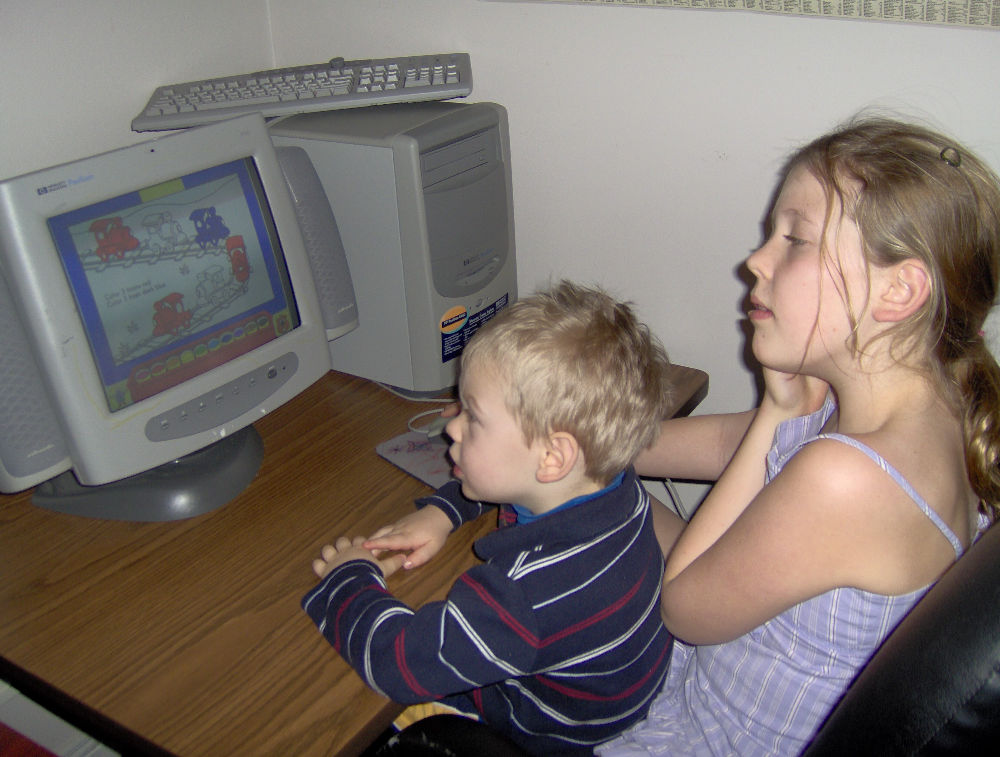

A 'brief' history

My sister and I on the PC that totally doesn't age myself
I have always loved technology and computers even when my oldest sister would only let me watch her use it.
From the age of 9 I had access to my own computer, and started making videos. Typically gaming oriented since I am a huge nerd. I'd upload these to YouTube and make my friends watch.
Since then, I learned about my love of doing things differently. Making things fun. Everything and everyone seems to take themselves so seriously. Especially school assignments and projects. So whenever presented the oppurtunity, I made videos for my assignments in elementary and highschool.
My goal was always to make something fun, and enjoyable, and most importantly different than everyone else. You can see some of these videos here.
Once I went to Carleton University's Media Production and Design (MPAD/BMPD) program, I started to learn a lot more about media in general. I took courses in Game Design, AR, Web Interface Development, writing, and programming. I even got to make a cool mystery game.
During the summer of my first year, through to the summer of my second, I worked at Canada Computers as a Sales Associate. I got to build computers for customers, talk about games all day, and see new and fancy parts. However, I left my position in 2023 to focus more on school.
MPAD ended up not being a perfect fit for me. It focused more on the study of media and journalism than the creation of things. Which is great, and I learned a lot, took some great classes, and met some awesome people. But it didn't really align with where I saw myself in the future.
I found that I really enjoyed making things, I really liked programming, and I enjoyed the creativity of it all. So, I ended up transfering out to my current program in 2023.
That about catches us up to today. Right now I am trying my hand at full-stack web development to enhance some personal projects, and expand my skill set.